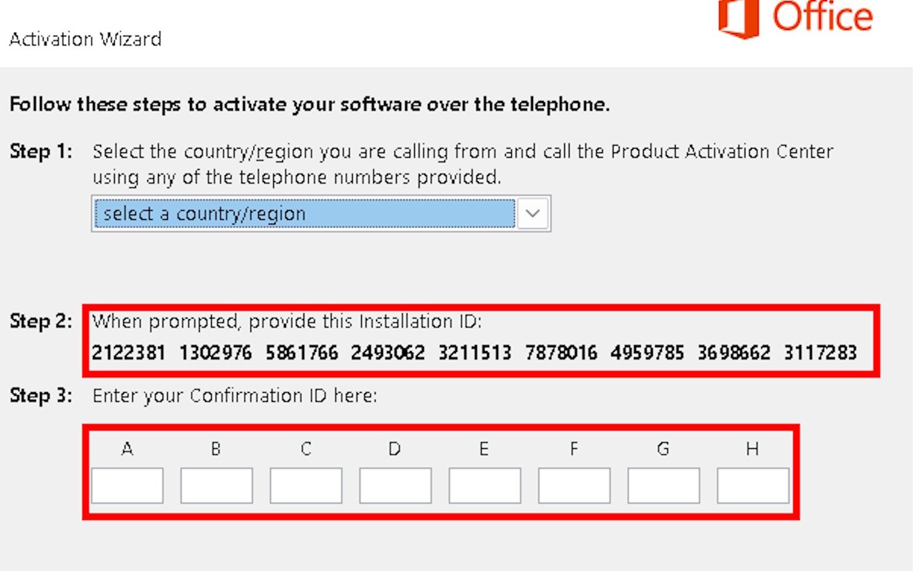

1. Descărcați fișierul de instalare Office din link-ul de mai sus
2. Deschideti fisierul (.rar) descarcat, dupa faceti dublu click pe fisierul (.exe)

3. Lasati setarile automate pentru destinatia folderului si apasati install

4. Asteptati ca instalarea sa se termine.
5. Deschideti orice aplicatie Office
6. Așteptați ecranul de activare care va apărea automat.
7. Introduceți cheia de produs pe care ați primit-o după achiziție, apoi faceți clic pe Activare Office
1. Daca va apare o fereastră asemanatoare trebuie să selectați „Activați prin telefon” și apoi vă va afișa ecranul ID de instalare cu un număr de telefon gratuit care este un sistem robot automat

2.Copiati ID-ul de instalare de pa pasul 2.

3.Accesati situl din linkul acesta:
GetCID
4.Introduceti ID-ul de instalare copiat anterior in sectiunea hasurata.

5.Apsati pe "Get confirmation ID".

6.Gata acuma instroduceti ID-ul primit in fereastra de activare telefonica, iar produsul se va activa.